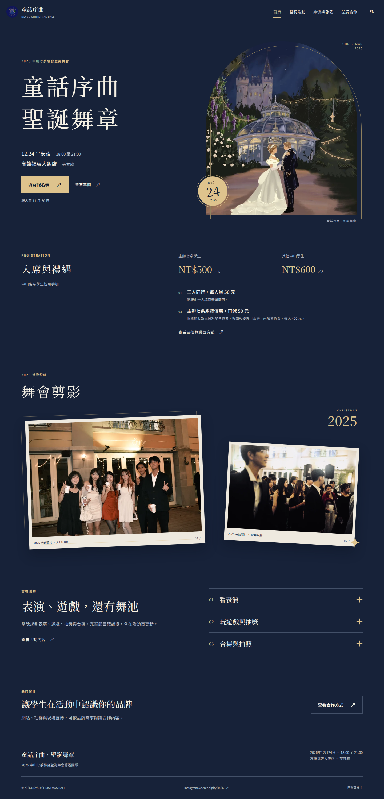
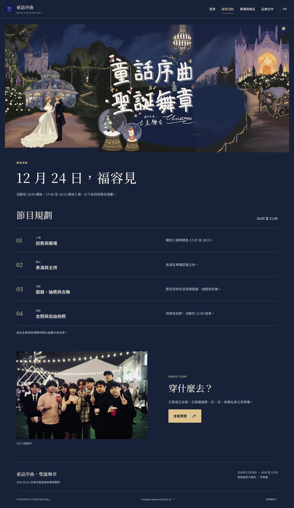
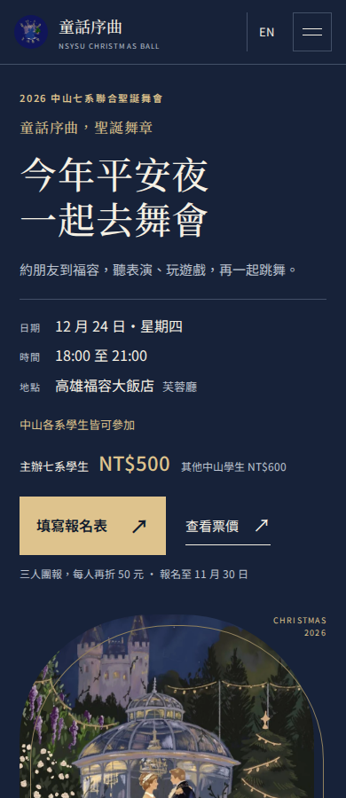
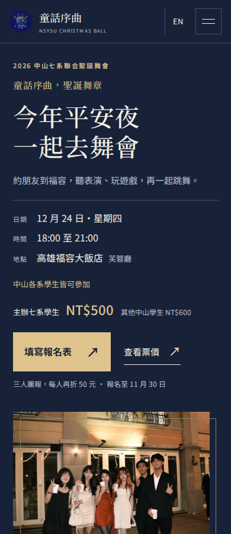
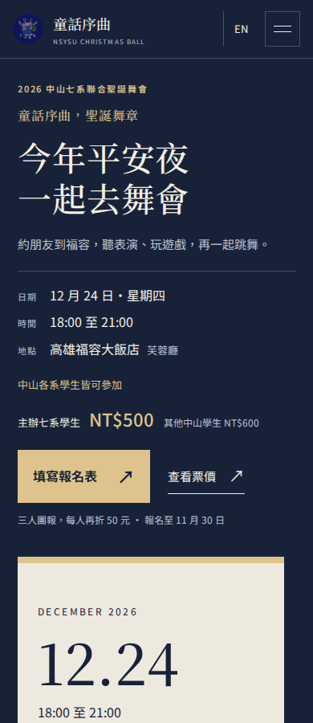
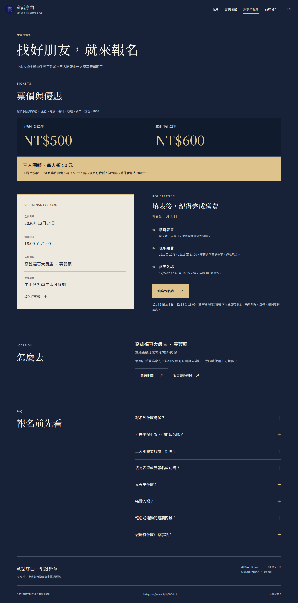
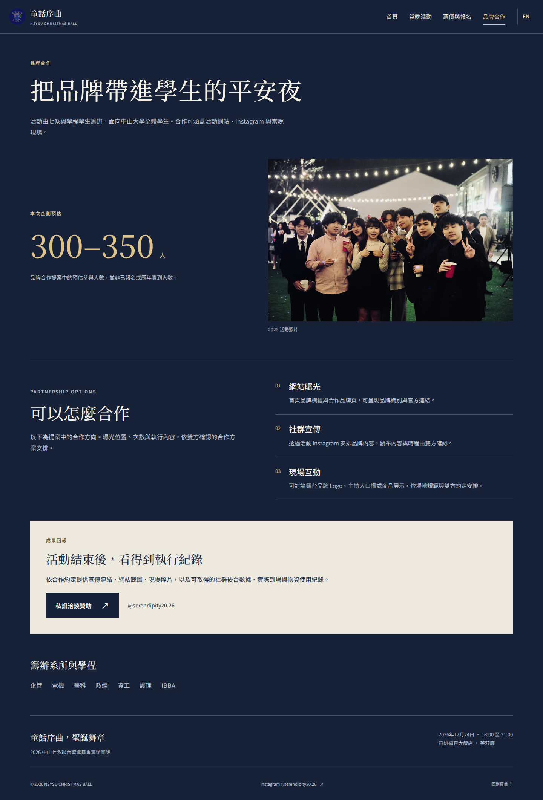

2026 中山七系聯合聖誕舞會
網站改版與候選方向
最新修訂：簡化首頁、完整優惠、相紙編排與微動態、活動頁三聯插畫。

第二輪首頁
第二輪活動頁第一輪候選比較紀錄
目前實作 A，保留活動插畫與清楚的票價、報名資訊。B 與 C 為版面候選，尚未經真人比較。
開啟本機網站 · 查看交付紀錄 · 真人測試流程
三個桌面首屏
手機首屏比較

A 手機首屏
B 手機首屏
C 手機首屏修改前後，桌面完整頁面
修改前後，手機完整頁面
報名與品牌合作

分清填表、繳費與入場
預估規模、曝光安排與執行回報這是本機改版檢查文件，不在公開活動網站中。代理比較與程式測試不能代替學生參加意願或品牌合作成效。